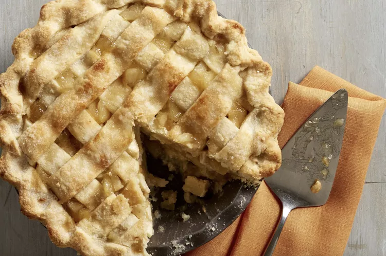

Homemade apple pie is always a good idea — and if you're looking for the best apple pie recipe of all time, you've come to the right place. Grandma Ople's recipe is one of our most popular recipes ever. Try it today to learn what all the hype is about!
